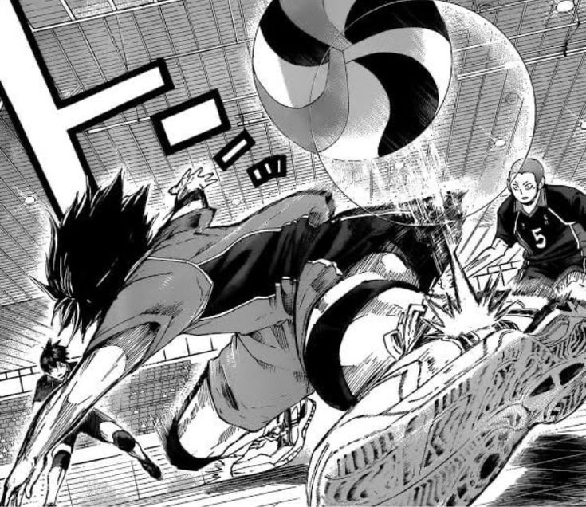
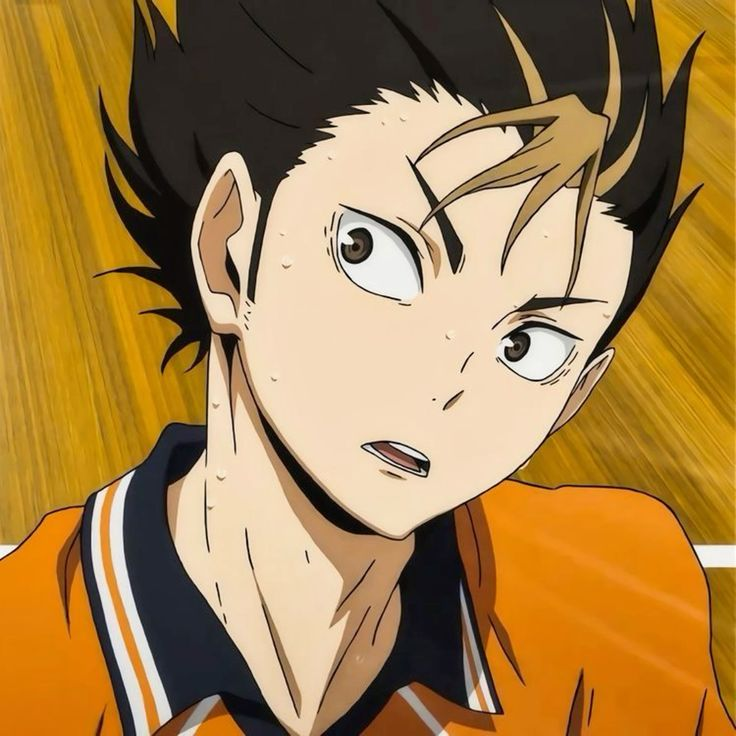
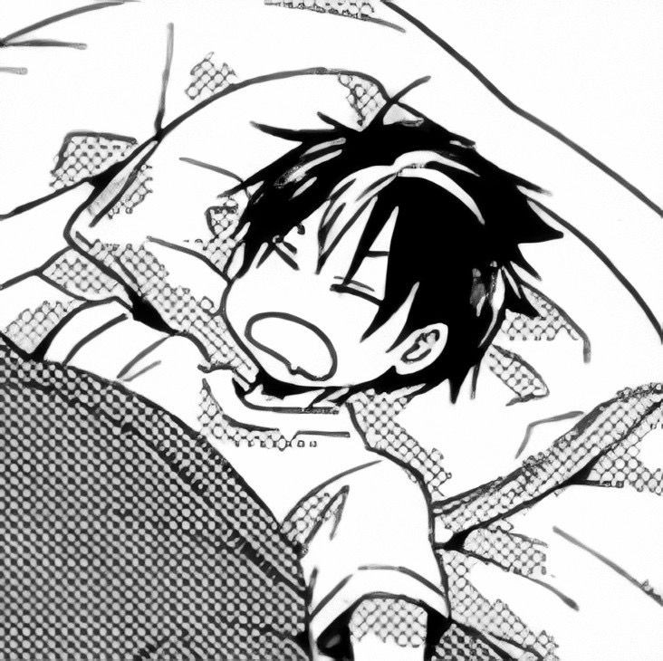
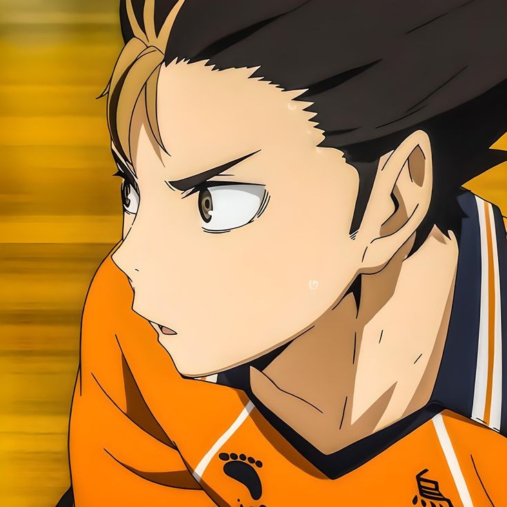
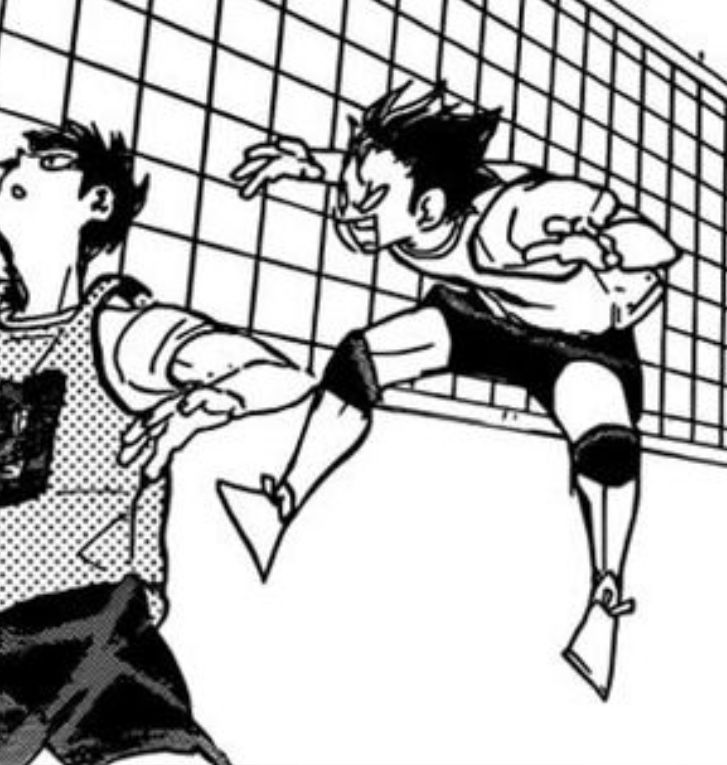

The Guardian Deity of Karasuno
This website is dedicated to Nishinoya Yuu, the Guardian Deity of Karasuno and his contributions to the Karasuno Volleyball Team <3

Meet Nishinoya Yuu.

He came to Karasuno for the uniforms.

His worst subject is Contemporary Literature.

He thinks the crowd would love an awesome save.

His favorite food is Gari-Gari Kun (Soda Flavor).
I kept the ball in the air. It's not your place to give up!
- Nishinoya Yuu to Asahi Azumane.